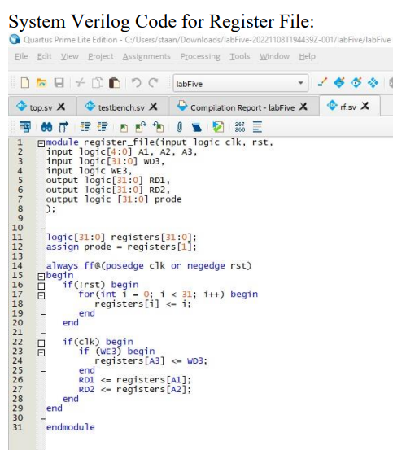
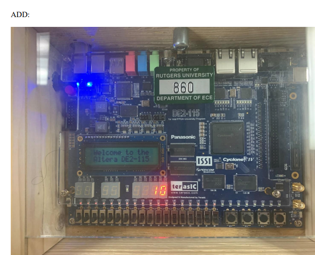

Implementing for Diverse Operations
In this project, I took a leading role in the design and implementation of a digital system based on a single datapath RISC architecture. The significance of this undertaking lies in the complexity and versatility of the operations the system was designed to perform. The inclusion of R-type, I-type, and BEQ instructions demanded a nuanced and sophisticated approach, requiring a deep understanding of digital design principles and SystemVerilog.
My involvement in this project extended beyond the mere execution of tasks; it encompassed the entire lifecycle of the system development. I played a crucial role in the conceptualization phase, where I contributed to the architectural decisions that shaped the foundation of the digital system. This involvement was not merely a technical endeavor but a strategic one, where I leveraged my understanding of RISC architecture to optimize the system's performance and efficiency.
The implementation phase was marked by hands-on coding and extensive use of SystemVerilog. My contribution involved translating the conceptual design into a functional and efficient digital system. This process required meticulous attention to detail, as the RISC architecture demands precision in instruction execution and data handling. Through this hands-on experience, I not only honed my coding skills but also developed a profound understanding of the intricacies of digital design.
One key insight from this project was the recognition of the broader implications of my work. The successful completion of this digital system project positioned me as a valuable asset for future digital system development initiatives. The acquisition of in-depth knowledge in both digital design and SystemVerilog elevated my skill set, making me well-equipped to contribute to more complex and advanced projects in the field.
Furthermore, the project provided me with insights into the practical applications of RISC architecture and its relevance in modern computing. Understanding the intricacies of RISC-based systems goes beyond the immediate project scope; it equips me with valuable knowledge that is transferable to a wide range of digital system development scenarios.
In summary, my role in designing and implementing a digital system based on a single datapath RISC architecture was not just a technical achievement but a strategic investment in my skills and expertise. The insights gained from this project extend beyond the specific operations performed by the digital system, positioning me as a knowledgeable and capable contributor to future digital system development projects.